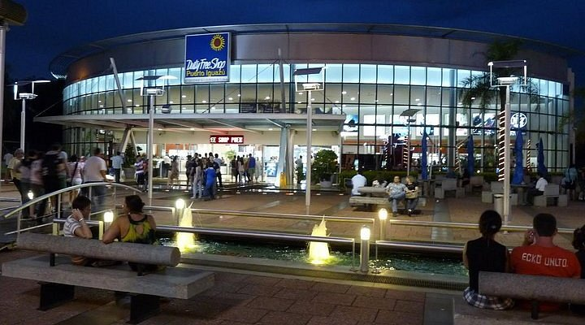

Mais solicitado
Mais solicitado
Aeroporto IGR
Chegada e saída do Aeroporto Internacional de Foz do Iguaçu. Acompanhamento de voo, sem custo por atraso.
- Placa com seu nome
- Rastreamento de voo
- Sem taxa por atraso
Aeroporto IGR · Cataratas · Foz do Iguaçu · Ciudad del Este
Respondemos em minutos, 24 horas por dia.
Somos um serviço de transfer privado — não somos agência de viagens nem operadora de turismo.
Mais solicitado
Chegada e saída do Aeroporto Internacional de Foz do Iguaçu. Acompanhamento de voo, sem custo por atraso.

Parque Nacional do Iguaçu. Garganta do Diabo, circuitos superior e inferior, Trem da Selva. Ida e volta incluídos.

Travessia de fronteira com assistência migratória. Cataratas lado brasileiro, Parque das Aves, Itaipú. Acompanhamos todo o processo.

Transfer privado ao Paraguai para compras. Eletrônicos, perfumes, duty free. Espera incluída, horário a combinar.

Transfer ao Duty Free Shop na fronteira Argentina–Brasil. Perfumes, bebidas, chocolates e eletrônicos sem impostos.
Coordenamos múltiplos veículos para grupos. Também fazemos La Aripuca, Minas de Wanda, Saltos do Moconá, San Ignacio e outros. Consulte com antecedência para uma cotação personalizada.
Pedir cotaçãoCada rota, cada travessia de fronteira, cada atração da Tríplice Fronteira. Orientamos antes e durante a viagem.
Sem taxímetro, sem surpresas na chegada. Confirmamos o preço antes de sair e ele não muda.
Monitoramos seu voo em tempo real. Se atrasar, ajustamos o horário sem custo adicional.
Voos noturnos, madrugadas, feriados. Respondemos pelo WhatsApp em minutos, sempre.
Acompanhamos nas travessias Argentina–Brasil e Argentina–Paraguai com toda a documentação.
Cadeirinhas e boosters sem custo adicional. Avise na hora de reservar e providenciamos.
"Serviço excelente! Nos buscaram no aeroporto e levaram até as Cataratas. Preço justo e muito pontuais."
"Ótimo serviço para cruzar a fronteira com as crianças. O motorista explicou tudo sobre a imigração e foi super paciente."
"Preço combinado, carro limpo, pontual. Fomos às Cataratas dos dois lados. Recomendo muito!"
Simples e direto — sem formulários complicados, sem intermediários.
Serviço, data, horário e quantas pessoas. Se for aeroporto, o número do voo.
Respondemos pelo WhatsApp com a confirmação e o preço exato.
Veículo identificado, preço combinado, sem surpresas.
Respondemos pelo WhatsApp em minutos, todos os dias. Falamos português, espanhol e inglês.